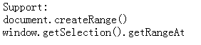

SD9031: 各浏览器对 Range 接口的实现存在差异
标准参考
DOM Level 2 Traversal Range 规范中定义了 Range：一个 Range（范围）是文档、文档片段或属性中的一个内容范围。从某种意义上说 Range 是连续的， 它由一对边界点之间的选中的所有内容构成并会被突出标注。
一个 Range 是由范围对应的开始和结束两个边界点组成的，在 Document 或 DocumentFragment 树中， 一个边界点位置（boundary-point's position）表现为一个节点和一个偏移量（offset）。 这个节点被称为边界点的容器或节点位置的容器，该容器以及它的祖先节点被称为边界点的祖先容器或祖先节点位置的容器。 节点中的偏移量被称为边界点和它的位置的偏移量。如果容器是一个 Attr、Document、DocumentFragment、Element 或 EntityReference 节点， 则偏移量位于它们的子节点之间；如果容器是一个 CharacterData、Comment 或 ProcessingInstruction 节点， 则偏移量位于它们包含的 UTF-16 编码的字符串中的 16 位单元之间。
Range 接口提供了访问和操作文档树的方法，这些方法比 Node 接口中类似的一些方法更高级。 每一个 Range 接口提供的插入、删除以及复制内容的方法可以直接映射到一系列 DOM Core 允许的节点编辑操作上， 也就是说 Range 接口的操作可以被看成是常用编辑操作的高效实现。
可以通过调用 DocumentRange 接口的 createRange() 方法来创建一个 Range，DocumentRange 接口可以从 Document 接口的对象实现中得到。
关于 Range 的更详细信息，请参考 Document Object Model Range。
问题描述
各浏览器对 Range 接口的实现存在差异。IE6 IE7 IE8 实现了独有的类似 Range 的 TextRange 对象，该对象拥有一些与标准 Range 接口中类似的属性及方法， 并且在创建 TextRange 时也与标准存在差异；而 Firefox Chrome Safari Opera 除了实现标准的 Range 接口外，还在此基础上扩展了一些属性及方法。 在创建 Range 时，也可以使用各自实现的 Selection 对象的 getRangeAt() 方法。
造成的影响
在使用标准 Range 接口的方法和属性时，IE6 IE7 IE8 中脚本可能会抛出异常；在使用浏览器特有的 Range 接口属性和方法时， 在其它浏览器下可能会脚本异常。这都可能导致依赖这些脚本的功能失效。
受影响的浏览器
| 所有浏览器 |
|---|
问题分析
1. Selection 接口
根据 HTML 5 草案和 MDN 中的描述，selection 表示一个页面中的文本选择集，它可能跨越多个元素， 它由用户在页面中拖拽鼠标选中的静态文本或页面的其它部分构成。 每一个浏览上下文有一个 selection， 它可以为空，也可以拥有多个范围（range）（一个不连续的 selection）。
HTML 5 草案中定义了 Selection 接口，该接口表现为一组 Range 对象，第一个 Range 对象在组中的索引为0，以此类推。 Selection 接口中的所有成员以 Range 对象上的操作方式定义，这些操作可以像 Range 接口中定义的一样抛出异常。 可以通过 'Selection.getRangeAt(index)' 方法从当前的选择集中获得指定索引的 Range； 使用 'Selection.toString()' 方法可以获得选择集中包含的文本。
Firefox Opera 将 Selection 接口实现为 Selection 对象，Chrome Safari 实现为 DOMSelection。 在以上浏览器中，都可以通过 'window.getSelection()' 方法获得 Selection 对象；在 Firefox Chrome Safari 下，也可以通过 'document.getSelection()' 得到该对象。
IE6 IE7 IE8 实现了与上述浏览器不同的、属性和方法都很有限的 selection 对象，并且只能使用 'document.selection' 获取该对象。
关于 selection 及 Selection 接口的详细信息，请参考 HTML 5 草案 7.6 The text selection APIs。
MDN 中关于 Selection 对象的详细信息，请参考 MDN DOM：Selection。
MSDN 中关于 selection 对象的详细信息，请参考 MSDN：selection Object。
2. 各浏览器对 Range 接口的实现存在差异
IE6 IE7 IE8 实现了 TextRange 对象，该对象定义了部分和 Range 接口对应的属性及方法；同时它也实现了部分 Selection 接口的操作， 因此 TextRange 更像是一个 Range 接口和 Selection 接口的组合，但在功能上相对标准有一定的限制。 Firefox Chrome Safari Opera 则在实现 Range 和 Selection 接口的基础上，扩展了部分属性和方法。
2.1. 各浏览器创建 Range 对象的差异
规范中只给出了使用 DocumentRange 接口的 'createRange()' 方法创建 Range，除此之外，各浏览器还实现了其它的创建 Range 的方法。
IE6 IE7 IE8 中只有 TextRange，在指定的对象上创建一个 TextRange 需要使用 'object.createTextRange()'。 注意不是任何类型的对象都可以创建 TextRange，只有 body 对象、button 对象、textarea 对象和 type='text' 的 input 对象才可以。
也可以通过 selection 对象获取一个 range 对象。在 IE6 IE7 IE8 中通过 'document.selection.createRange()' 可以从当前的文本 selection 中得到一个 TextRange； 在其它浏览器中则可以使用 'window.getSelection().getRangeAt(index)' 获得一组 Range 中指定的 Range。
我们通过以下代码来测试各浏览器对各种创建 Range 对象的方法的支持程度：
<script type="text/javascript">
var methods = ["document.createRange()", "window.getSelection().getRangeAt", "document.selection.createRange()", "document.body.createTextRange()"],
i = 0, info, setInfo;
window.onload = function() {
info = document.getElementById("info"),
setInfo = function(msg){info.innerHTML += msg + "<br/>";};
for(;i<methods.length;i++){
var method = methods[i];
try{
eval("(" + method + ")");
setInfo(method);
}catch(e){}
}
}
</script>
<div id="info">Support: <br/></div>
各浏览器中表现如下：
| IE6 IE7 IE8 | Firefox Chrome Safari Opera |
|---|---|
 |
 |
由此可见，IE6 IE7 IE8 只支持创建自己独有的 TextRange，它们无法创建标准的 Range。 这也说明了 IE6 IE7 IE8 的确没有实现 Range 接口，而其它浏览器也不支持 TextRange 对象。
2.2. 各浏览器中 Range 接口及 TextRange 对象的成员存在差异
Firefox Chrome Safari Opera 在实现标准 Range 接口的基础上，针对自身需求并参考 IE 的实现，添加了若干常量、属性和方法。
以下代码汇总测试了 Range 接口标准和扩展的以及 IE 下的属性及方法在各浏览器中的支持程度：
<script type="text/javascript">
var standard = ["startContainer", "startOffset", "endContainer", "endOffset", "collapsed", "commonAncestorContainer",
"START_TO_START", "START_TO_END", "END_TO_END", "END_TO_START","setStart", "setEnd", "setStartBefore",
"setStartAfter", "setEndBefore", "setEndAfter", "collapse", "selectNode", "selectNodeContents", "compareBoundaryPoints",
"deleteContents", "extractContents", "cloneContents", "insertNode", "surroundContents", "cloneRange", "toString", "detach"],
ext = ["compareNode", "comparePoint", "createContextualFragment", "intersectsNode", "isPointInRange",
"getBoundingClientRect", "getClientRects", "NODE_AFTER", "NODE_BEFORE", "NODE_BEFORE_AND_AFTER", "NODE_INSIDE", "expand"],
ie = ["boundingHeight", "boundingLeft", "boundingTop", "boundingWidth", "htmlText",
"offsetLeft", "offsetTop", "text", "compareEndPoints", "duplicate", "execCommand",
"execCommandShowHelp", "findText", "getBookmark", "inRange", "isEqual", "move", "moveEnd",
"moveStart", "moveToBookmark", "moveToElementText", "moveToPoint", "parentElement", "pasteHTML",
"queryCommandEnabled", "queryCommandIndeterm", "queryCommandState", "queryCommandSupported",
"queryCommandText", "queryCommandValue", "scrollIntoView", "select", "setEndPoint"],
range, i, count = 0, info, setInfo, testRange;
window.onload = function() {
info = document.getElementById("info"),
setInfo = function(msg){info.innerHTML += msg + "<br/>";},
testRange = function(member){
if(range[member] !== undefined){
setInfo(member);
count++;
}
};
if(document.createRange)
range = document.createRange();
else
range = document.selection.createRange();
setInfo("<strong>标准 Range 接口的常量、属性及方法：</strong>");
for(i=0;i<standard.length;i++){
testRange(standard[i]);
}
setInfo("<strong>扩展 Range 接口的常量、属性及方法：</strong>");
for(i=0;i<ext.length;i++){
testRange(ext[i]);
}
setInfo("<strong>TextRange 的常量、属性及方法：</strong>");
for(i=0;i<ie.length;i++){
testRange(ie[i]);
}
document.getElementById("total").innerHTML = count;
}
</script>
<div id="info"><strong>Support: <span id="total"></span></strong><br/></div>
以上所有参与测试的常量、属性及方法来自各浏览器的官方实现文档引用及 Range.prototype。汇总测试结果如下表：1
| 常量、属性及方法 | IE6 IE7 IE8 | Firefox | Chrome Safari | Opera |
|---|---|---|---|---|
| 标准 Range 接口 | N2 | Y | Y | Y |
| compareNode | N | N | Y | N |
| comparePoint | N | Y | Y | Y |
| createContextualFragment | N | Y | Y | Y |
| intersectsNode | N | N | Y | Y |
| isPointInRange | N | Y | Y | N |
| getBoundingClientRect | Y | N | Y | Y |
| getClientRects | Y | N | Y | Y |
| expand | Y | N | Y | N |
| NODE_AFTER | N | N | Y | N |
| NODE_BEFORE | N | N | Y | N |
| NODE_BEFORE_AND_AFTER | N | N | Y | N |
| NODE_INSIDE | N | N | Y | N |
| 不包含扩展成员3的 TextRange 对象 | Y | N | N | N |
注1：Y 表示支持该常量、属性或方法，N 表示不支持。
注2：IE6 IE7 IE8 在 TextRange 对象上实现了和 Range 接口相同的 collapse 方法。
注3：扩展成员指表中其它的那些常量、属性或方法，这些成员中的部分在 Range 和 TextRange 中都实现了。
MDN 中关于 Range 的详细信息，请参考 MDN DOM：range。
关于 TextRange 的详细信息，请参考 MSDN ：TextRange Object。
解决方案
通过浏览器特性检测针对 IE6 IE7 IE8 正确创建 TextRange，对其它浏览器创建 Range。虽然 IE6 IE7 IE8 没有实现 Range 接口，但 TextRange 对象中也提供了许多能够实现类似功能的属性和方法。
下表总结了这些属性和方法，它们可能只是在某方面可以实现相同的功能，并不代表这两个方法或属性完全相同。
| Range | TextRange |
|---|---|
| compareBoundaryPoints() | compareEndPoints() |
| cloneRange() | duplicate() |
| setStart() | moveStart() |
| setEnd() | moveEnd() |
| selectNodeContents() | moveToElementText() |
| toString() | text |
关于上述这些方法及属性的详细描述，请参考 DOM 2 Range Interface Range 和 MSDN 中的 TextRange Object。
参见
知识库
相关问题
测试环境
| 操作系统版本: | Windows 7 Ultimate build 7600 |
|---|---|
| 浏览器版本: |
IE6 IE7 IE8 Firefox 3.6.10 Chrome 8.0.552.0 dev Safari 5.0.2(7533.18.5) Operea 10.63 |
| 测试页面: |
createRange.html testRange.html |
| 本文更新时间: | 2010-10-14 |
关键字
Range TextRange Selection 范围 文本范围